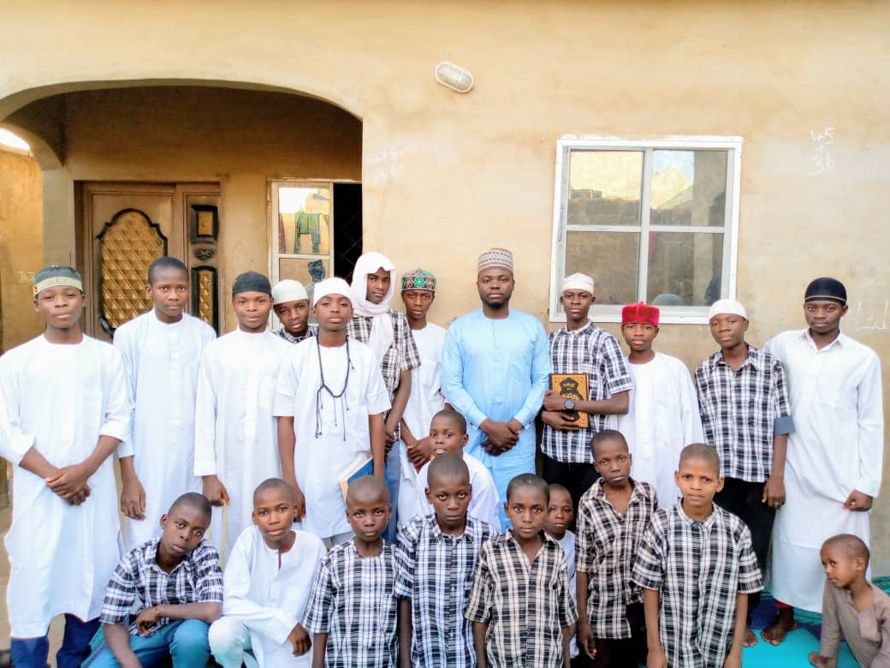
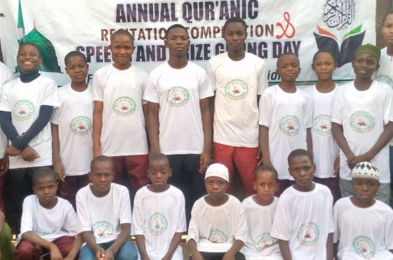
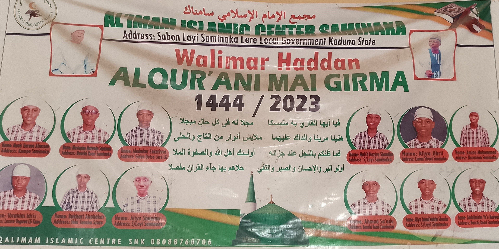
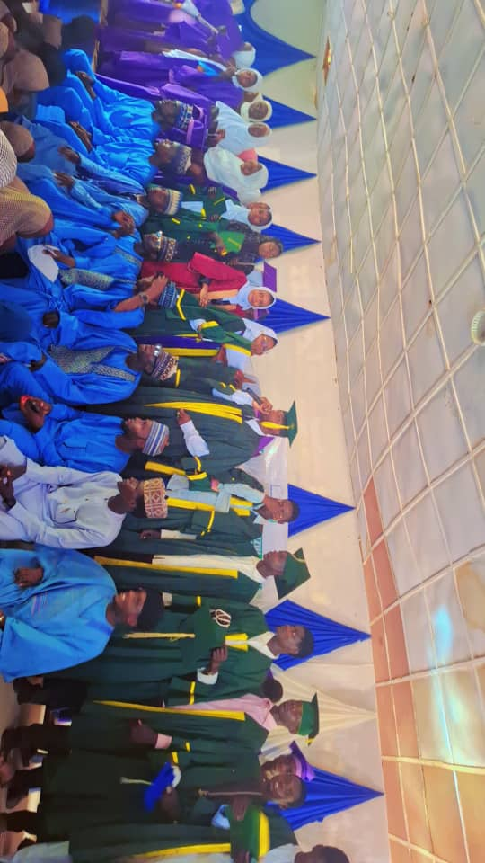
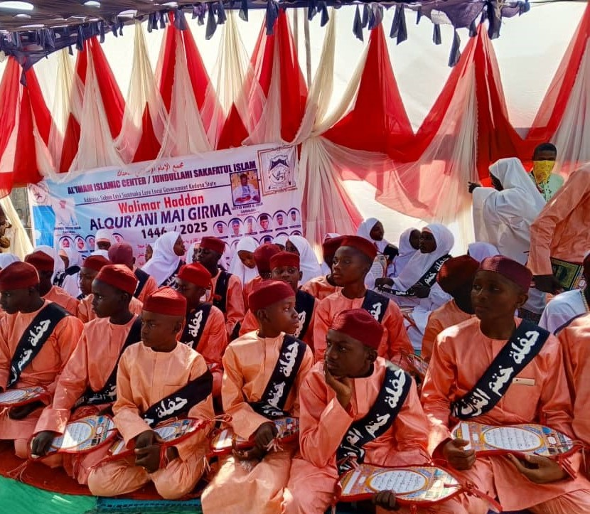
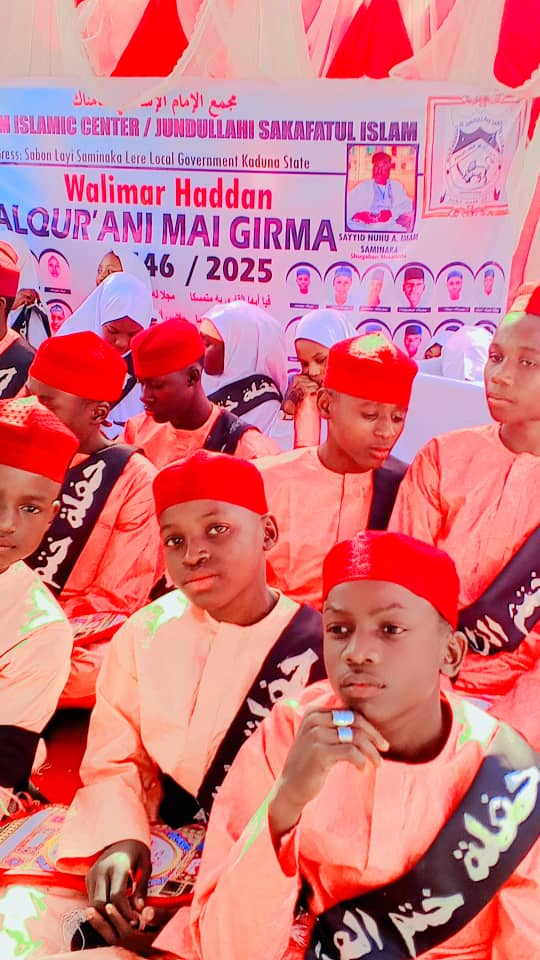
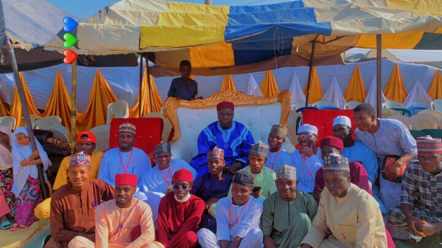

تعليم القرآن الكريم، الدراسات الإسلامية، والعلوم الحديثة الغربية
Al-Imam Islamic Center Saminaka is a distinguished Islamic educational institution dedicated to nurturing students with sound Islamic values, academic excellence, and moral discipline.
Our mission is to raise knowledgeable, disciplined, and responsible students who are spiritually grounded and academically prepared for the future.
The school also provides a well-organized and secure student housing complex (hostel) designed to support students in their academic, spiritual, and personal development within a peaceful Islamic environment.
We offer a comprehensive educational program designed to develop students spiritually, academically, and morally.
Intensive memorization and recitation of the Holy Qur’an with proper Tajweed.
Teaching of Fiqh, Hadith, Tarikh, Tafsir, and Islamic morals.
Reading, writing, speaking, and understanding classical Arabic language.
Modern academic subjects to prepare students for higher education and future careers.
Safe and disciplined accommodation for students in a conducive learning environment.
Our students actively participate in academic, spiritual, and extracurricular activities that promote discipline, brotherhood, leadership, and personal development.

Our noble students after an evening Qur'anic session at the hostel complex, where they use the opportunity to revise what they had memorized earlier.

Students in their house uniforms preparing for the annual Qur'anic recitation competition.
Al-Imam Islamic Center is under the leadership of Sheikh Shu'aibu Imam, a dedicated Islamic scholar committed to nurturing students upon Islamic values, discipline, and academic excellence.
“Education is the foundation of a disciplined and righteous society.”
To provide a balanced and high-quality education that nurtures students in Qur’anic memorization, Islamic knowledge, Arabic studies, and Western education, while building strong moral character, discipline, and a sense of responsibility.
We aim to create a safe and supportive boarding (hostel) environment where students can grow academically, spiritually, and socially.
To become a leading Islamic institution recognized for producing well-rounded individuals who are grounded in the teachings of the Qur’an, fluent in Arabic, and equipped with modern knowledge to contribute positively to society.
We aspire to raise a generation of disciplined, knowledgeable, and God-conscious leaders for the future.

Holy Qur'an memorizers — Class of 2023 during their graduation ceremony.

Speech and Prize-Giving Day alongside the graduation ceremony for students from different sections of the school.

Qur'anic memorization Walimah ceremony for the 2025 Huffaz graduates.

Students during the 2025 Qur'anic memorization Walimah celebration.

Some of our former students paying a courtesy visit to the school proprietor.
07033734045 / 08031524899